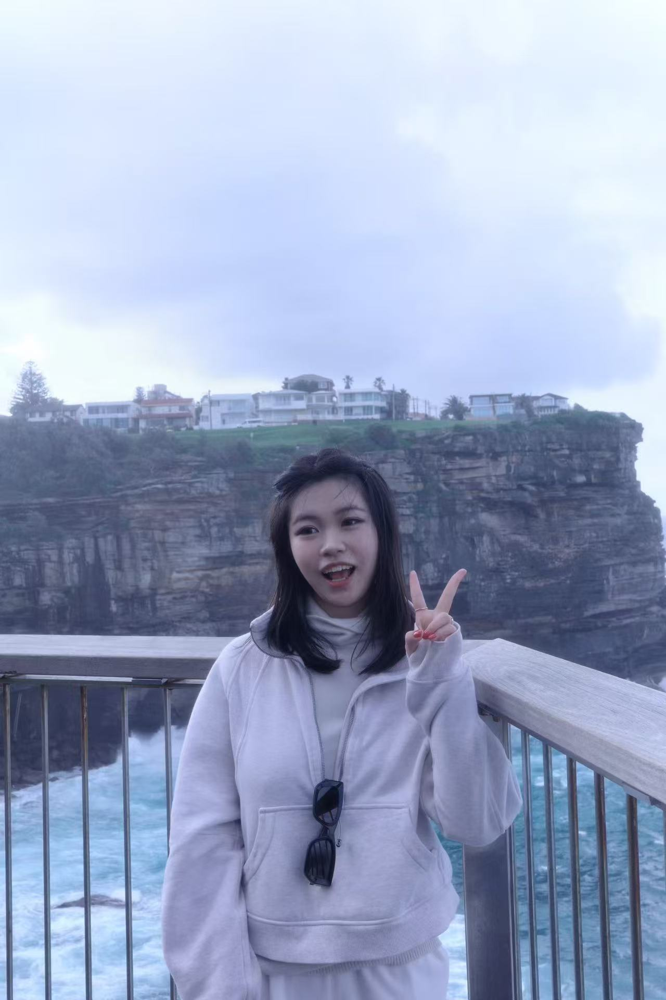
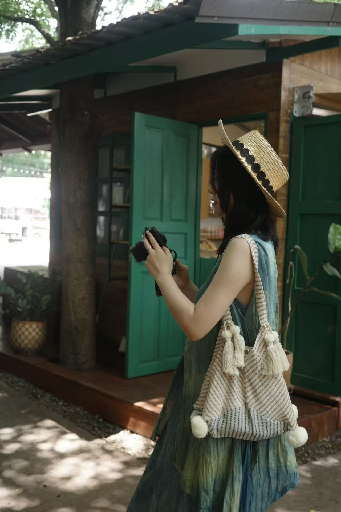

2025—2026
昆士兰大学The University of Queensland
传播学硕士 · Master of Strategic CommunicationMaster of Strategic Communication
公关传播 · 活动营销 · 品牌营销PR · EVENTS · BRAND MARKETING
杜雯怡WENYI DUWENYI DU杜雯怡
传播学硕士在读，连接传播策略、活动创意、现场执行与内容表达。我关注人为什么停下、参与和记住，并把这种洞察转化为真实可落地的品牌触点。 A Master of Strategic Communication candidate connecting communication strategy, event ideas, on-site delivery and content. I’m interested in what makes people stop, participate and remember—and how that insight becomes a real brand touchpoint.
2026 年 12 月后可全职到岗Available full-time after December 2026



关于我 / ABOUT MEABOUT ME / 关于我
我的学习路径连接了会展经济与管理、新媒体设计和战略传播；实践则从内容生产延伸到汽车品牌空间、大型会展与澳大利亚校园推广。这让我既关心一个概念是否清晰，也关心受众最终看见什么、参与什么，以及每个触点能否顺利落地。 My academic path connects Event Economics & Management, New Media Design and Strategic Communication. My practical experience spans content production, automotive brand spaces, major exhibitions and Australian campus activation. This keeps me attentive to both the clarity of an idea and what audiences actually see, do and remember.
教育背景EDUCATION
传播学硕士 · Master of Strategic CommunicationMaster of Strategic Communication
会展经济与管理 / 新媒体设计 · 中外合办双学位Event Economics & Management / New Media Design · Joint dual degree
03 / 实习经历EXPERIENCE
从消费内容、汽车品牌空间到大型会展和澳洲校园市场，持续理解品牌如何在真实场景中与人建立关系。From consumer content and automotive brand spaces to major exhibitions and Australian campuses, learning how brands build relationships in the real world.
市场推广与活动运营实习生Marketing & Event Operations Intern
参与布里斯班三校新生节活动筹备与现场执行，支持产品推广、用户引导及 16 个展位协同。Supported Brisbane orientation events across three universities, including product promotion, user onboarding and coordination across 16 booths.
活动展览实习生Events & Exhibitions Intern
参与第二十五届中国国际汽车工业展览会创意策划、互动机制与现场执行。Contributed to creative planning, interactive mechanics and on-site delivery for the 25th China International Auto Show.
空间运营实习生Space Operations Intern
参与品牌空间体验、主题活动策划主持与车友社群慈善义卖。Supported brand-space experience, themed event planning and hosting, and a community charity auction.
新媒体运营实习生Social Media Operations Intern
围绕产品信息独立完成商品详情页设计与视频剪辑，并参与社交账号内容规划及矩阵布局。Created product-detail visuals and video edits while contributing to social content planning and account-matrix structure.
04 / 代表项目SELECTED PROJECTS
向下阅读四个独立案例章节。每一章都区分项目背景、个人贡献与整体结果。Scroll through four focused case-study chapters. Each separates context, personal contribution and overall outcome.
PROJECT 01 · 2026
Dealmoon 布里斯班三校新生节Dealmoon Brisbane Campus Activation
面向 UQ、QUT 与 Griffith 新生，通过线下活动介绍 Dealmoon 软件并引导首次使用。Orientation events for UQ, QUT and Griffith students, introducing the Dealmoon app and guiding first use.
参与展位规划、现场流程、物料与推广话术梳理；以抽奖权益为沟通入口，支持产品介绍、用户引导、Onboarding 手册与活动资料制作，并梳理 16 个展位的签到抽奖和二维码集章流程。Contributed to booth planning, on-site flow, materials and talk tracks; used prize-draw benefits as a conversation entry point; supported product onboarding, handbook and event-material creation, plus sign-in and QR stamp processes across 16 booths.
PROJECT 02 · 2025
第二十五届中国国际汽车工业展览会 · 3D 打印品牌纪念品互动25th China International Auto Show · 3D-printed brand souvenir activation
在场馆出口区域创造离场前的品牌互动，以纪念品延长观众对展会的记忆点。An exit-zone interaction designed to extend the exhibition’s brand memory through a physical souvenir.
提出并撰写 3D 打印品牌纪念品方案，以转盘抽奖为参与入口；规划平面标识转立体建模、设备调试与现场制作流程，并拆分耗材、建模与交通成本。同期参与约 7 个集章点位的动线、规则及阶梯奖励设计。Proposed and wrote a 3D-printed souvenir concept using a spinning-wheel draw as entry point; mapped 2D-to-3D modelling, equipment testing and on-site production, and broke down material, modelling and transport costs. Also contributed to a seven-stop stamp route and tiered rewards.
注：200 件/日与 1,500 元为原方案规划口径；3D 纪念品方案最终实施。Note: 200 items/day and RMB 1,500 are planning figures; the 3D souvenir concept was implemented.
PROJECT 03 · 2024
蔚来车友社群慈善义卖 · 流程设计与现场执行NIO Community Charity Auction · Flow design and on-site delivery
围绕流浪动物保护议题开展车友群内部慈善义卖，活动所得款项用于捐助流浪动物保护基地。An internal owner-community charity auction focused on stray-animal welfare, with proceeds donated to a protection base.
负责活动流程设计、约 70 件拍品与相关物资整理，并参与现场环节执行与用户互动；实习期间也负责线下用户接待和品牌社区介绍。Designed the event flow, organised approximately 70 auction items and related materials, and supported live execution and audience interaction; also handled offline reception and introduction to the brand community during the internship.
品牌价值不只被讲述，也可以被共同完成。Brand values can be lived together, not only communicated.
PROJECT 04 · 2025
Vinnies “Give Good, Feel Good” · UQ Multimedia Communication
昆士兰大学多媒体传播课程合作项目，面向 Gen Z 探索公益议题的跨平台表达。A University of Queensland multimedia communication collaboration exploring cross-platform social-impact storytelling for Gen Z.
在团队中重点负责传播策略与 Shorthand 叙事网页搭建，制定多周跨平台内容排期，并完成 TikTok 短视频创作。Focused on communication strategy and Shorthand narrative-site production, developed a multi-week cross-platform content schedule and created TikTok short-video content.
本项目未提供传播触达或转化数据，因此不展示推测性指标。No reach or conversion metrics were supplied, so no estimated results are shown.
05 / 影响力速览IMPACT SNAPSHOT
所有数字均来自新版简历；“约”与“近”的口径被完整保留。Every figure comes from the latest resume, with approximate wording preserved.
下载、注册与首次使用completed downloads, registrations and first uses
DEALMOON三校活动现场有效转化effective on-site conversion
CAMPUS ACTIVATION支持协同的现场展位booths supported
EVENT OPERATIONS社群慈善义卖参与者charity-auction participants
NIO COMMUNITY整理的拍品与相关物资auction items and materials prepared
LIVE DELIVERY慈善义卖整体筹款并捐赠raised and donated overall
COMMUNITY IMPACT06 / 我能带来的能力WHAT I BRING
从受众与传播目标出发，组织核心信息、内容节奏和跨平台表达。Organising messages, content cadence and cross-platform expression around audience and objectives.
把创意转译成动线、规则、奖励、物料和可以执行的现场流程。Translating ideas into journeys, rules, rewards, materials and workable live flows.
关注展位、物料、用户引导、跨点位配合以及现场的每一个细节。Working across booths, materials, user guidance, multi-stop coordination and live details.
参与叙事网页、商品详情页、短视频与社交内容规划和制作。Contributing to narrative web, product-detail pages, short video and social content.
工具TOOLS
Microsoft Office · Canva · Shorthand · Figma · CapCut
语言与跨文化LANGUAGE & CROSS-CULTURAL
雅思 7 分 · UQ 英文传播项目 · 澳大利亚高校学生推广与沟通IELTS 7.0 · English-language communication projects at UQ · Australian university student promotion
荣誉RECOGNITION
全国会展大赛 2024 全国二等奖 · 2025 全国三等奖National Exhibition Competition · National 2nd Prize 2024 · National 3rd Prize 2025
07 / 保持联系LET’S CONNECT
寻找公关传播、活动营销与 Brand Marketing 方向的全职机会 · 2026 年 12 月后可到岗Open to full-time opportunities in PR, event marketing and brand marketing · Available after December 2026